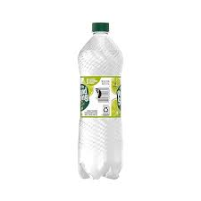

Zesty water
Ribbed Mollusk Meat
Refreshing Spring Water

Description
The recipe will require collecting the ingredients from killed mobs from around various places around the open world.
Combining the contents of the recipe requires a skill of 15 in Cooking
Igredients
1x Ribbed Mollusk Meat
2x Refreshing Spring Water
Steps
Gather the Mollusk Meat from Mollusks
Gather Spring Water from Water sources
Go to the nearest Cooking Station
SMAK!!! the ingredients together
Enjoy! :)